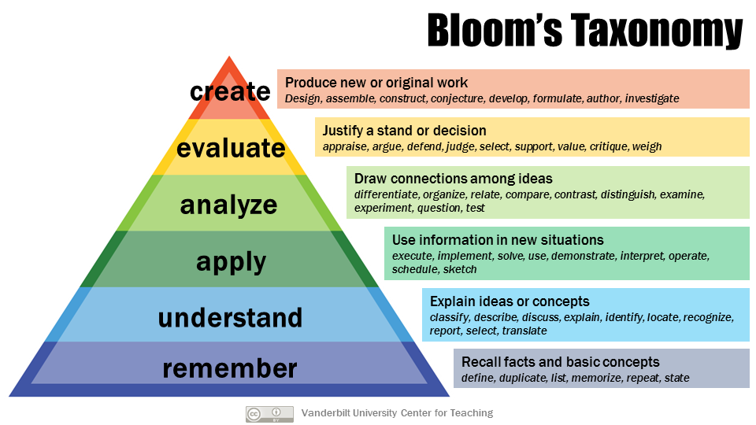

Learning (module) aims and learning outcomes are closely related butare not the same.
Learning Aims are broad statements of intent illustrating the overall purpose of a module.
Module (learning) aims are much broader than learning outcomes and should reflect the educational level of a module/programme. They do not need to be measurable but they should align with the appropriate educational level of the Scottish Credit and Qualifications Framework (SCQF).
Learning outcomes
What is a learning outcome?
a statement of what a student is expected to know, understand and be able to do at the end of a period of learning and how that learning is to be demonstrated. Learning outcomes are linked to the relevant level and since they should generally be assessable they should be written in terms of how the learning is represented.
(Moon, 2002)
Learning outcomes describe desired student behaviour resulting from learning. They are more precise and describe in detail what it is that a successful learner will be able to do and know by the end of a specified part of a module.
Learning outcomes should be demonstrable and measurable. They are closely related to assessment criteria which provide the means of measuring the intended learning.
Moon (2002) provides a list of broader purposes of learning outcomes including:
- They make it possible to be explicit about what is expected of the learner in terms of learning to be attained and the assessment.
- They provide a means of indicating to learners the link between their learning and the manner in which learning is to be assessed.
- They can provide an indication of the standards that the individual teacher or the higher education community expects of learners, particularly if the relationship of the learning outcomes to level descriptors is made explicit.
- They are a good way of communicating the learning purpose that the module is intended to fulfill. They provide information to other teachers, students and employers (etc) and they can be used within marketing material.
- They can be a useful tool for communication with external examiners.
- The use of learning outcomes provides a means of judging and attaining consistency of volumes and standards of learning within and across institutions, particularly with regard to the same subject material.
How to write learning outcomes
This section will show you some simple ways to help you write learning outcomes that actually are demonstrable and measurable – in other words getting students to extend their knowledge and skills in ways that map to the relevant levels of the SCQF.
Start with the end in mind. Before you start writing learning outcomes, think carefully about what is you want your students to do and be able to demonstrate. As students progress through a programme, the level of skills and knowledge increases in line with the SCQF.
As a rule of thumb, learning outcomes should consist of three parts:
| A verb (something the student does) | An object (what the student is working on or with) | A context for the action (activity or assessment) |
Writing the verb
Finding and using the right active verb is the key to writing meaningful learning outcomes.
Although it has been with us for a considerable time Bloom’s Taxonomy (1956) is a useful starting point when considering the active verb for a learning outcome i.e. what level of knowledge or skills are expected? The taxonomy was updated in 2001

This interactive version of the revised (2001) version of the taxonomy illustrates some exemplars of it being used. For some more verb inspiration you can also explore this Bloom’s Taxonomy Verbs list.
Remember, learning outcomes should be short, unambiguous and to the point so that everyone (staff and students) has a shared understanding.
Using the 3 part rule should help you to write meaningful learning outcomes. You should try to avoid terms such as “appreciate”, “demonstrate”, “be familiar with” as they are unclear and difficult to measure.
| A verb (something the student does) | An object (what the student is working on or with) | A context for the action (activity or assessment) |
| Add your own exemplar | Add your own exemplar | Add your own exemplar |
Learning Outcomes Checklist:
- Are there an appropriate number of learning outcomes? Do the learning outcomes contain any ambiguous terminology or jargon?
- Can you identify an action verb for each and is the level appropriate?
- Can you determine the context of the learning for each learning outcome?
- Do the learning outcomes make it clear to the student what they will be able to do on completion of the module?
- Are they measurable?
Remember a learning outcome needs to be much more specific than a module aim.
Find out more:
- Chapter 5, Moon, J. & Dawsonera 2002, The module & programme development handbook: a practical guide to linking levels, learning outcomes & assessment, Routledge. (available online from the GCU library)
- Writing Learning Outcomes
- Example Learning Outcomes
- Good vs Bad Learning Objectives
- GCU Common Good Curriculum resources and information for staff